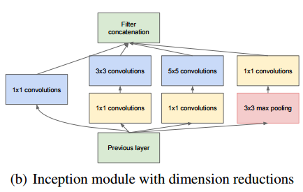
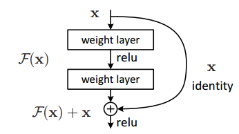

Publication: Going Deeper with Convolution
GoogleNet is a cheap and relatively accurate 1000 class image classifier first published in 2014
| Accuracy | ILSVRC 2014 dataset: Accuracy (Top-5) 93.33% |
|---|---|
| ILSVRC 2012 dataset: Accuracy (Top-5) 89.06% | |
| Model Size | 27Mb in npy format |
| Architecture |
9 identical blocks of parallel convolutional neural network layers with downsampling, shown below  |
| Advantage |
|
| Disadvantage |
|
Publication: Deep Residual Learning for Image Recognition
ResNet50 is a highly accurate model published by Microsoft research. It's gain in accuracy comes at a cost of computational expenses. Both its model memory cost and execution time exceed those of GoogleNet.
| Accuracy | ILSVRC 2012 dataset: Accuracy (Top-5) 92.02% |
|---|---|
| Model Size | 100Mb in npy format |
| Architecture |
50 layers of similar blocks with "bypass connections" shown as the x identity below  Shortcut path serves as a model simplifier and provides the benefit of simple models in a complex network. If shortcut path is dominant, the layers between this shortcut are essentially ignored, reducing the complexity of the model in effect. |
| Advantage |
|
| Disadvantage |
|